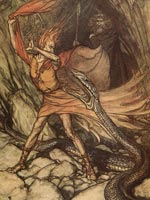

Андварі ("обережність"), у скандинавській міфології цверг, володар фатального золота і магічного кільця сили. У німецькому епосі "Пісня про Нібелунгів" і в лібрето опери "Кільце Нібелунгів" виступає під ім'ям карлика Альбріха.
Андварі, карлик-цверг, персонаж героїчного епосу "Пісня про Нібелунгів". Андварі дізнався секрет зберігання золота Рейнських дев і зумів викрасти золотий скарб. Будучи в той час владикою цвергов, він змусив своїх підданих виготовити золоті скарби, а сам викував із золота чарівне кільце сили. Рейнські діви, що оплакує втрату свого золота, звернулися за допомогою до Локі, але тільки піддалися принизливим глузуванням шкідливого бога.
Хитрий Андварі сховав скарби, а сам зачаївся в підземному озері. Проте вести про магічному кільці сили негайно спонукали до дії богів і їх недругів, велетнів-етунов. Велетень Фасольт і Фафнір зажадали у богів кільце сили в сплату за будівництво Вальхалли, житла ейнхеріев, "відважно полеглих", і взяли заручницею богиню родючості, красуню Фрей. Боги Один, Фрігге, Локі, Фрейр і Хенир вирушили на пошуки скарбу, захованого карликом-ЦВЕРГ в скелі у людей в Мідгард.
Під час подорожі по землі людей, Локі каменем убив сплячу видру, потім він, Один і Хенир запропонували мертву видру господареві будинку в обмін на нічліг. До свого жаху, господар, чаклун Хрейдмар, визнав в убитому тваринному свого сина Отра. Він тут же сказав заклинання, яке позбавляло гостей магічної сили, і за допомогою двох інших синів, Фафнира і Регіна, зв'язав їх по руках і ногах. Один заявив, що вони не прийшли б сюди, будучи вбивцями хазяйського сина. Хрейдмар зажадав у богів викуп за смерть Отра - скарби карлика Андварі.
Взявши на час у Ран, дружини бога моря Егіри, чарівну мережу, Локі відправився до підземного озера і зловив в озерному гроті величезну змію, в яку перетворився володар незліченних скарбів злісний Андварі (за іншою версією міфу Андварі ховався у величезній щуці в підземному озері). Зі страшними погрозами Локі відняв у нього золотий скарб і магічне кільце сили збільшили багатство. Оскаженілий Андварі наклав на кільце і золото прокляття, що обіцяє загибель для кожного нового їх власника. Власне, з історії загибелі власників проклятого золота кільце Андварі стало іменуватися Кільцем Нібелунгів, а золотий скарб Рейнських дев - скарбом Нібелунгів.
Кільце карлика Андварі, як і знамените кільце влади Драупнір, множило багатство, але несло на собі страшне прокляття ЦВЕРГ. Чаклун Хрейдмар, отримавши кільце від Локі в якості викупу за вбитого сина Отра, став першою його жертвою, прийнявши смерть від руки свого другого сина, Фафнира, яке мріяло заволодіти золотом. Щоб охороняти здобутий злочинним шляхом скарб, Фафнір перетворився на дракона. Коли юний герой Сігурд вбив його, казковий скарб перейшло до нього разом з прокляттям. Прокляті скарби не принесли щастя і Сігурд, загиблому від рук братів-нібелунгів Гуннара і Хегні, в свою чергу позбулися життя. Вдова Сигурда Гудрун (в німецькому епосі Крімхільда) заманила їх у пастку і наказала стратити.